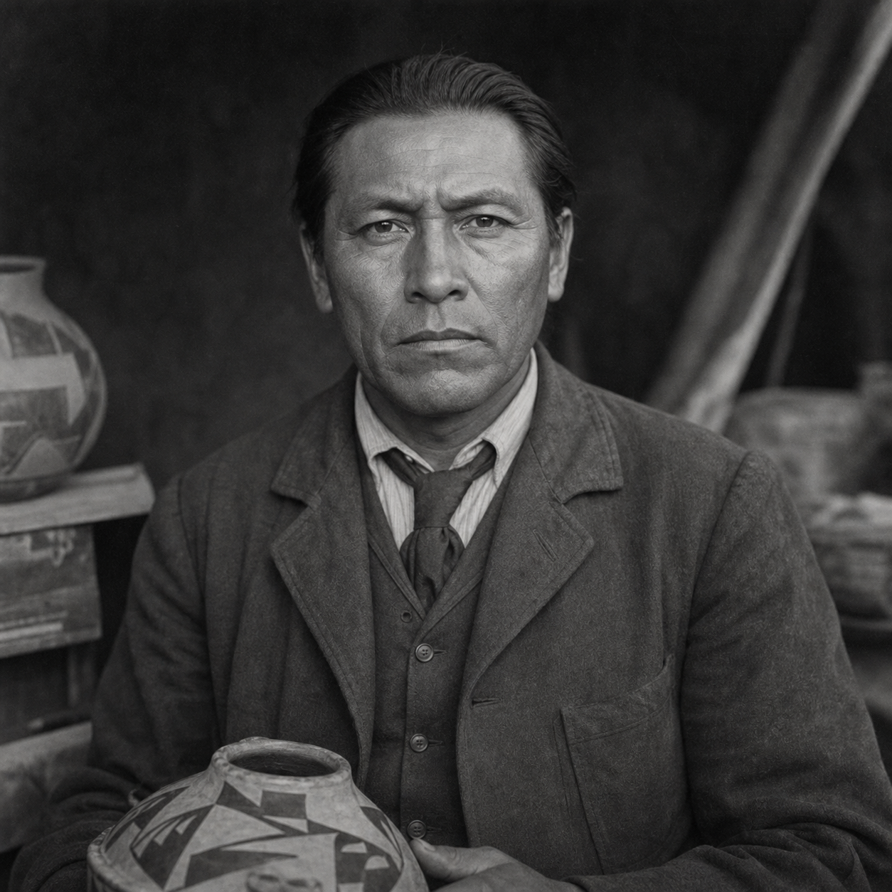

Nataani Begay
(375 Points)
Male; Age 33; 6'0", 180 lbs; A lean Diné man in his early thirties with a surveyor's patience, field-creased clothes, careful hands, and the self-control of someone used to being the least officially trusted expert in the room.
| ST: 11/14 [10] | IQ: 16 [80] | Speed: 6.25 |
| DX: 13 [30] | HT: 12/16 [20] | Move: 6 |
| Dodge: 6 | Parry: 7 |
Advantages
Comfortable Wealth [10] (Starting Wealth: $1,500); Contacts (BIA Field Investigator) (Skill 15, 12 or less, Somewhat Reliable) [4]; Contacts (Navajo Tribal Police Lieutenant) (Skill 12, 9 or less, Somewhat Reliable) [1]; Contacts (San Juan County Sheriff's Records Clerk) (Skill 15, 9 or less, Somewhat Reliable) [2]; Intuition [15]; Lang: Diné Bizaad (Native Speak/Native Write) [6]; Lang: English (Native) [0]; Lang: Núuchi (Accented Spoken/Accented Written) [4]; Lang: Spanish (Accented Spoken/Accented Written) [4]; Patron (Followers of the Right Hand) (15 or less) [60] (Equipment: Standard, +5; Special Qualities (Access to Magic in Non-magical World): Very Unusual, +10; Secret: -5; Subtraction (Minimal Intervention): -5); Patron (Burial Keepers of the Taken Things) (9 or less) [10]; Strong Will +2 [8] (Will: 18); Unusual Background (Natural Learner) [5].
Disadvantages
Code of Honor (Custodianship of the taken things) [-10]; Duty (15 or less) [-25] (Involuntary: -5; Subtraction (Extremely Hazardous): -5); Enemy (Unknown Enemies of FRH) [-60] (Unknown: -5; Subtraction (Access to Magic in Non-magical World): -15); Obsession 2 (Return the taken things to their rightful keepers) [-10]; Second Class Citizen (Diné man in the 1920s Southwest) [-5] (Reaction: -1); Secret (Secret Psi) [-20]; Secret (Patron (Burial Keepers of the Taken Things)) [-5]; Sense of Duty (Dine and Ute descendants, and the dishonored dead) [-10]; Stubbornness [-5].
Quirks
Goes quiet whenever someone says artifact when they mean loot.; Keeps railroad pencils sharpened to survey points.; Never jokes in a room that holds ancestors.; Pockets a pinch of dust from every disturbed site.; Reads museum labels like witness statements.. [-5]Powers
Psychometry 22 [22] (Is able to see back 10,648 years (8,725 BCE) Physical Range: 484" (39 ft, ~13m) circle Neolithic (8,000 BCE - 4,500 BCE) Stonehenge is about 3,000 BCE The Great Pyramid of Gaza is about 2,570 BCE Ancient Jericho (Tell es-Sultan) in 9,000 BCE is a pre-pottery proto-city of 200-3,000 people Humans are reliable able to control fire ++++ With Extra Effort (+4 power, -12 fatigue, -8 skill (13)) Is able to see back 17,576 years (15,653 BCE (17,000 Before Present)) Physical Range: 676" (56 feet, ~18m) circle Mesolithic or Epipalaeolithic (20,000 BP - 10,000 BP) Occuring over the Upper Paleolithic and Neolithic during the Stone Age The Last Ice Age (LGP) was still going on ending about 11,700 BP in Northern Africa/The Levant In Europe and Asia, Humans were moving to Mesolithic and battling megafauna. Wooly mammoths and saber-toothed cats. Paleo-Indians some 13,500 years ago in the Americas. https://en.wikipedia.org/wiki/List_of_archaeological_periods).
Skills
Anthropology-18 [8]; Archaeology-18 [8]; Area Knowledge (Cloudburg / Four Corners Borderlands)-18 [4]; Axe Throwing-15 [4]; Axe/Mace-15 [8] (Parry: 7); Bow-15 [16]; Cartography/TL6-16 [2]; Climbing-13 [2]; Detect Lies-18 [8]; Diplomacy-17 [6]; Driving/TL6 (Locomotive)-12 [1]; Electronics Operation/TL6 (Communications)-17 [4]; First Aid/TL6-19 [6]; Guns/TL6 (Pistol)-16 [2]; Guns/TL6 (Rifle)-15 [1]; Guns/TL6 (Shotgun)-15 [1]; Hidden Lore (Dine Cosmology)-18 [6]; History (General)-15/21 [4] (Specialty: General); History (Dine)-15/21 [4] (Specialty: Dine); History (Ute)-15/21 [4] (Specialty: Ute); History (United States)-14/20 [2] (Specialty: United States); Knife-14 [2] (Parry: 6); Knife Throwing-14 [2]; Lasso (Riata)-15 [8] (Parry: 7); Law-18 [8]; Linguistics-16 [8]; Mathematics-14 [1]; Mechanic/TL6 (Simple Machines)-18 [6]; Mechanic/TL6 (Steam Engine)-18 [6]; Merchant-17 [4]; Naturalist-16 [4]; Navigation/TL6-18 [8]; Occultism-18 [6]; Orienteering-17 [4]; Psychometry-17 [6] (Fatigue: 0, Range: 40'4", Area: subject, Page: P13, Length of History: 10648 years); Research-18 [6]; Riding (Horse)-13 [2]; Savoir-Faire-16 [1]; Scrounging-17 [2]; Spear-13 [2] (Parry: 6); Streetwise-14 [½]; Surveying/TL6-17 [4]; Survival (Desert)-14 [½]; Survival (Mountains)-16 [2]; Survival (Woodlands)-16 [2]; Telegraphy-17 [2]; Tracking-19 [8]; Writing-17 [4].
Description
Nataani Begay learned early that the language of preservation is often just theft spoken slowly and with credentials. He came up through hard-country work first: rail routes, survey discipline, horseflesh, field camps, and the practical education of a man who has spent real time outside institutions before having to negotiate with them. War, labor, and movement gave him the part of himself that cannot be bluffed by polite paperwork. The antiquarian in him grew on top of that older spine, not instead of it. By the time he began moving through museums, university collections, private archives, and field expeditions, he already knew too much about routes, custody, and who actually pays when a sacred thing is renamed a discovery.That is what makes Nataani different from other artifact-facing characters. He is not driven by acquisition but by return. He is not a collector, and he is not impressed by collectors. He reads provenance morally. His psychometric gift ties him to violated relics, disturbed remains, false catalogues, and the small lies institutions tell themselves when they want possession to sound like stewardship. He can stand in front of a case label, a ruined site, or a badly handled object and feel that the wrongness is older and more human than the museum language surrounding it. That is why he reads routes, ruins, records, and bones with the same hard eye.
The hidden society around him, the Burial Keepers of the Taken Things, makes explicit what was already true in the man: he belongs to a custodial world rather than an extractive one. His professional life is therefore a constant argument with respectable theft. He knows rail schedules and survey maps, but he also knows family memory, burial duty, and what it means when white institutions keep ancestors under the language of science, preservation, or civilization. He moves through their rooms because someone must. He studies them because someone should know exactly how the crime is being filed.
For a new player, Nataani should feel like a field-hardened Dine antiquarian whose scholarship has never become detached from labor, place, or obligation. His powers do not make him mystical in the cheap sense. They make him more answerable to violated sites and taken things. He is there to get sacred objects and the dead home if he can, and to make sure the people hiding behind glass and paper know that somebody noticed what they called legitimate.